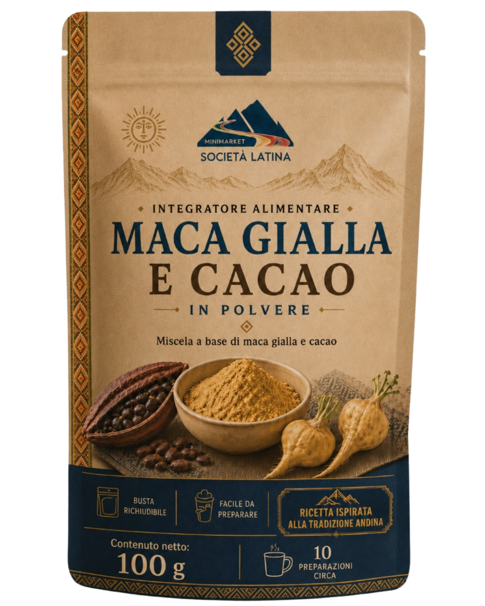

La vera energia
delle Ande
Un integratore funzionale premium. L'incontro perfetto tra la saggezza millenaria andina e il ritmo della tua vita moderna.
Scopri di Più
Un integratore funzionale premium. L'incontro perfetto tra la saggezza millenaria andina e il ritmo della tua vita moderna.
Scopri di Più

A oltre 4.000 metri di altitudine, dove la terra è incontaminata, nasce la nostra Maca Gialla. Ispirata alla saggezza Andina, questa radice custodisce la forza primordiale della natura.
Unita al Cacao sudamericano, venerato come "il cibo degli dèi", abbiamo creato molto più di una bevanda: è un momento di connessione con te stesso per iniziare la giornata con chiarezza e vitalità.

Rivitalizza il tuo corpo con una fonte di energia stabile, perfetta per affrontare la giornata senza i cali improvvisi della caffeina.
La sinergia tra cacao e maca favorisce la chiarezza mentale e la concentrazione, ideale per lo studio e il lavoro.
Supportiamo un'agricoltura che rispetta la biodiversità del suolo peruviano e garantisce un commercio equo.
Concediti un momento tutto per te. Bastano tre semplici passi per trasformare la tua colazione o la tua pausa in un rito di benessere.
Prepara una tazza del tuo latte preferito.
Versa 10g della nostra miscela (due cucchiaini).
Gusta l'aroma intenso delle Ande.
